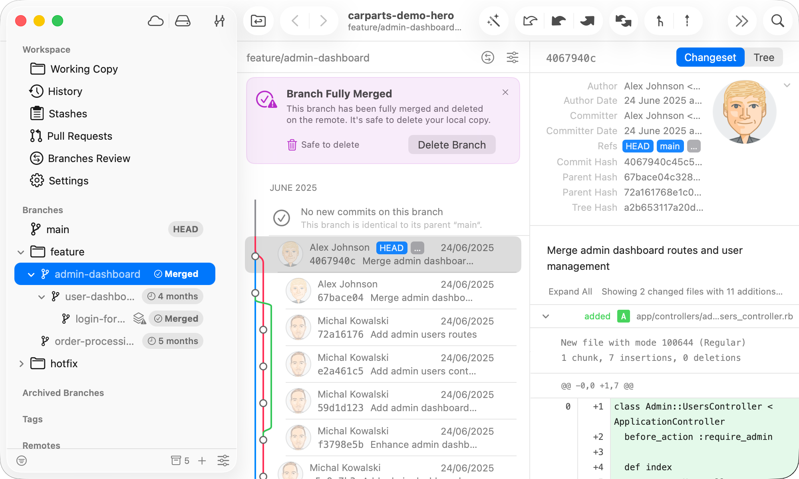

Where It Excels
Powerful visual branch operations, fast commit history navigation, and advanced Git action support.
Developer Tool Deep Dive
Tower is a commercial desktop Git client focused on advanced visual workflows, repository control, and high-productivity operations for power users and release engineers.
Powerful visual branch operations, fast commit history navigation, and advanced Git action support.
Paid licensing and larger feature surface than teams needing only lightweight commit + sync actions.
Strong across trunk-based and GitHub Flow when PR governance remains in the Git host platform.
Excellent local Git companion while webhook, approvals, and promotion controls stay in FlexDeploy and Git host.

Release or platform teams use drag-and-drop and visual history controls for safer branch hygiene.
Developers shape commits locally and push clean branch history for approval-centric delivery.
Teams inspect lineage quickly before opening rollback or forward-fix branches for reviewed PR execution.